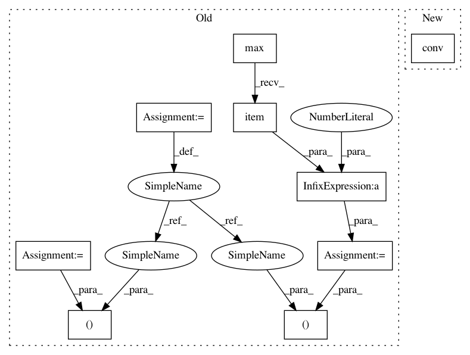

a8ad5f0067eee2ec1dfd353d8c97f7c926b05dad,test/nn/conv/test_sg_conv.py,,test_sg_conv,#,5
Before Change
def test_sg_conv():
in_channels, out_channels = (16, 32)
edge_index = torch.tensor([[0, 0, 0, 1, 2, 3], [1, 2, 3, 0, 0, 0]])
num_nodes = edge_index.max().item() + 1
x = torch.randn((num_nodes, in_channels))
conv = SGConv(in_channels, out_channels, K=10, cached=False)
assert conv.__repr__() == "SGConv(16, 32, K=10)"
After Change
out1 = conv(x, edge_index)
assert out1.size() == (4, 32)
assert torch.allclose(conv(x, adj1.t()), out1, atol=1e-6)
out2 = conv(x, edge_index, value)
assert out2.size() == (4, 32)
assert torch.allclose(conv(x, adj2.t()), out2, atol=1e-6)
t = "(Tensor, Tensor, OptTensor) -> Tensor"
In pattern: SUPERPATTERN
Frequency: 3
Non-data size: 9
Instances
Project Name: rusty1s/pytorch_geometric
Commit Name: a8ad5f0067eee2ec1dfd353d8c97f7c926b05dad
Time: 2020-06-30
Author: matthias.fey@tu-dortmund.de
File Name: test/nn/conv/test_sg_conv.py
Class Name:
Method Name: test_sg_conv
Project Name: rusty1s/pytorch_geometric
Commit Name: 7b4892781e2198ad99a8655da03133505619040a
Time: 2020-06-28
Author: matthias.fey@tu-dortmund.de
File Name: test/nn/conv/test_arma_conv.py
Class Name:
Method Name: test_arma_conv
Project Name: rusty1s/pytorch_geometric
Commit Name: ba8de5d0776da82a0f57b710f9648539555164c8
Time: 2020-06-26
Author: matthias.fey@tu-dortmund.de
File Name: test/nn/conv/test_x_conv.py
Class Name:
Method Name: test_x_conv